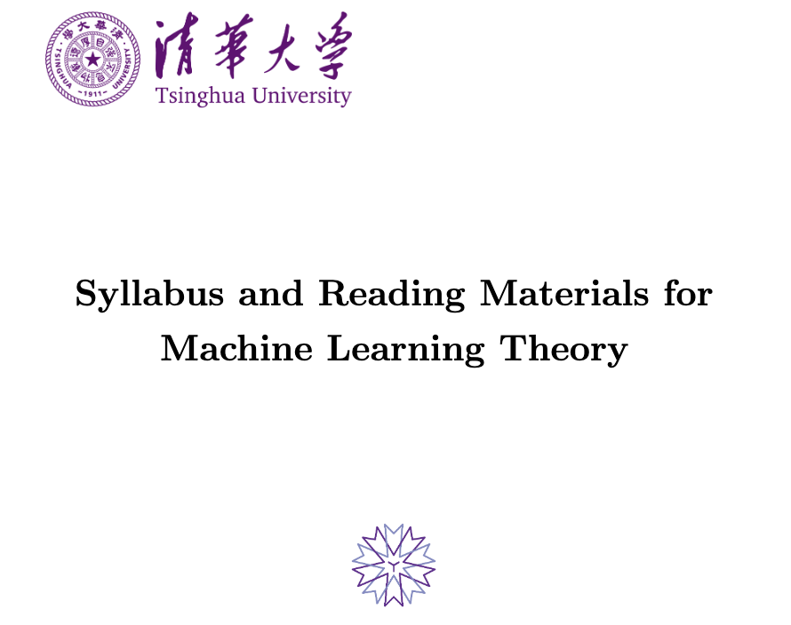

Machine Learning Theory
Lecturer: Angelica Aviles-Rivero
YMSC, Tsinghua University
Fall Semester 2025
Teaching Assistant: Yanqi Cheng and Chun-Wun (Sam) Cheng

Overview
Machine learning has become a transformative tool in shaping advancements across diverse fields such as healthcare, finance, automation, and scientific research. This course aims to equip students with a rigorous understanding of the theoretical principles underpinning machine learning, focusing not only on how algorithms operate but on why they work and under what conditions they succeed or fail. By exploring fundamental topics such as generalisation, optimisation, and computational complexity, students will learn to critically assess the performance and limitations of learning algorithms.
The course begins with foundational concepts, introducing key frameworks like PAC learning and the VC-dimension to formalise the idea of learning and its mathematical guarantees. As the course progresses, students will delve into advanced techniques such as kernel methods for non-linear data, structured prediction for complex outputs, and neural networks, exploring both their theoretical underpinnings and practical applications. Special emphasis is placed on understanding modern challenges in machine learning, including overparameterisation, implicit bias, and the double descent phenomenon, as well as solutions like regularisation and adaptive optimisation techniques.
In addition to algorithm design, the course addresses the computational feasibility of learning, discussing the trade-offs between model complexity and efficiency. Advanced topics such as probabilistic modelling, PAC-Bayesian analysis, and reinforcement learning are also covered, providing a comprehensive toolkit for tackling real-world problems. By the end of the course, students will possess a deep understanding of machine learning theory, enabling them to design robust algorithms, critically evaluate existing models, and contribute to the development of the field while appreciating its inherent limitations and considerations.

Announcement
All announcements, including homework assignments, deadlines, and other important updates, will be sent through the THU system. Please make sure to check the THU system regularly to stay informed and avoid missing any key information.
Lecture Material
This course is supported by several core texts that provide the essential theoretical and practical knowledge required for this course on machine learning theory. In addition to the main readings, extra materials will be recommended throughout the course for those who are curious to explore advanced topics and gain deeper insights. Below is a brief description of the primary materials we will use, along with supplementary texts available for further study. Current version of the suggested reading materials can be downloaded here.

Schedule
Each module in this course is designed to provide a structured approach to learning. It is composed of several lectures, each focusing on a specific topic or concept. These lectures aim to build foundational knowledge and progressively delve into advanced concepts, ensuring a comprehensive understanding of machine learning theory.